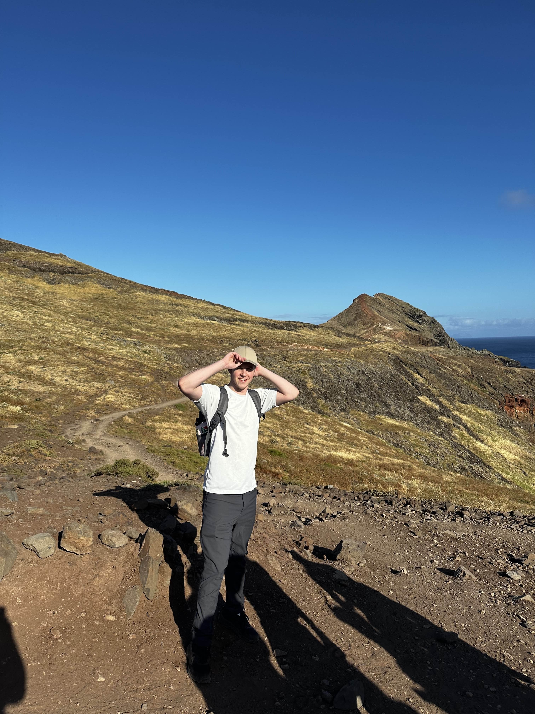
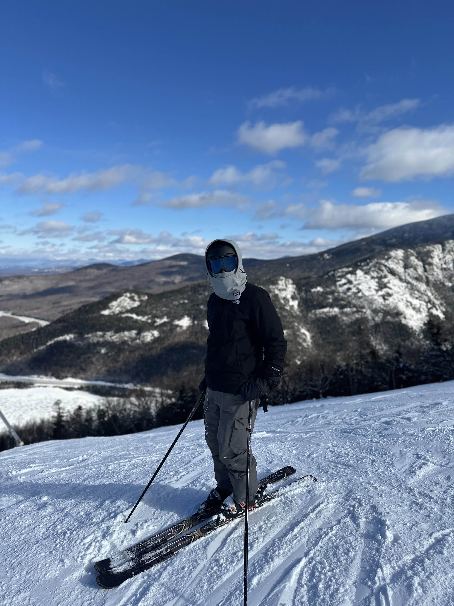

Profile

Highlights of Qualifications
Committed, driven Cyber Security professional with ability to work well both with a team and independently. Perseveres through challenges. Calm and focused under demanding conditions. Excellent communication skills. Experience providing outstanding client/customer service. Dedicated work ethic. Consistently meets tight deadlines using strong time management skills.
Experience

FM Global, Johnston, RI
Network Security Engineer CW (07/2024 - Present)
- Configure IKE Gateways, IPSec Tunnels and Bandwidth Configurations for
new Prisma Access
locations.
- Managed configurations for 33 Palo Alto Firewalls.
- Lead on-boarding training for 1 New CW and 2 New Co-Ops.
- Review team’s pull requests, ensuring infrastructure remained secure.
- CW Network Segmentation Project: Created network level
security policies to
segment traffic for ~500 Users. High Priority Board level security risk.
Worked within a tight
timeline (3 months). Led another engineer during the project. Leveraged
Splunk and Excel to
generate weekly network reports to aid in firewall rule creation.
Researched service exposure
and potential organizational impact. Led War room effort on Project
Go-Live date to immediately
remediate impacts.
- Terraform: Re-organize complex security module that
associates Azure NSGs with
Vnets. Manage multiple environments via terraform workspaces.
- Manage Azure WAF policies, update application gateway WAF policy
associations.
- Calico: Managed Kubernetes Cluster Egress tier security
policies.
- Managed Azure Firewall policies. Data lookups and IP groups to create
dynamic firewall policies.
Cyber Co-Op Tech III - CTOE (Firewall Engineer) (01/2024 - 06/2024)
- Worked with and configured numerous security controls: Palo Alto
Firewalls, F5, Azure NSGs,
ASGS, Firewalls, WAF, Application Gateways, Front door.
- CICD Deployment pipelines. Terraform – Infrastructure as code.
- Created and updated security infrastructure, WAF policies, Azure
NSGs/ASGs.
- Utilized data lookups to create dynamic security rules.
- Organized and helped create documentation for NYDFS Audit.
- Participated in an Agile environment (Kanban, retrospectives, and
planning meetings).
- Adhered to change management and approvals processes.
Cyber Co-Op Tech III - CTDR (SOC Analyst) (07/2023 - 12/2023)
- Performed the duties of a SOC Analyst within FM Global in SIEM
Environment.
- Triaged Alerts. Used Splunk SPL to investigate logs. Used Crowdstrike
agent to remove
potentially malicious files from hosts.
- Threat intelligence, investigated the scope of CVE’s and possible impact
on the company.
- Received one-to-one feedback. Gained exposure to new technologies
(CrowdStrike, Splunk,
ServiceNow SOAR, Azure, 365 Defender).
- Created security event playbooks.
- Organized processes and incident level categorization for security
events ie: DDoS, Ransomware,
Misconfigurations, and Insider Threat.
IGT, West Greenwich, RI
Network Engineering Intern (07/2022 – 6/2023)
- Installed and configured communications systems into server racks in
accordance with a rack
diagram.
- Maintained accurate asset registration spreadsheet.
- Gained knowledge on all models of routers, switches, load balancers, and
Firewalls such as
Cisco, Juniper, Fortinet, and A10.
- Took initiative and completed assigned tasks with accuracy.
- Generated CSR and digital certificates.
Education

New England Institute of Technology, East Greenwich, RI
Bachelor of Science degree in Cyber Security and Network
Engineering
Accomplishments
- GPA: 4.0
- Phi Theta Kappa Honor Society member and Alpha Chi Honor Society member
- Recipient of the James Langevin Cybersecurity Scholarship
- Recipient of the William R. Talladay Memorial Scholarship
- Recipient of the ASIS Security Education Scholarship
- NECHE College Accreditation Standards Student Representative. Chosen by
the college for this
role.
- Capture the Flag Club Founder
- Esports Team Captain/Player
- Best of Tech 2023/2025 – Faculty Chosen Award for excellence and
achievement in cyber security
Bachelor’s Capstone Project
Worked individually and in a group to solve comprehensive network issues.
Solved large scale network issues related to misconfigurations, networking
protocols, and troubleshooting. This project incorporated all that I had
learned in previous networking classes.
AICU Representative
Selected by the college to serve as student representative. The group was
composed of one representative from each of the eight AICU Rhode Island
member institutions and offered students a voice in advocacy efforts. The
focus of the group’s efforts was on increasing funding for the State Student
Aid program which offers funding to RI High School graduates who attend
college in RI.
E-Sports Team Captain
Chosen by the team to serve in a leadership role. Assisted players and
provided coaching. Helped them to improve their skills. Ensured the team
followed protocols.
Skills
- Azure Network Security Controls
- Network Monitoring Tooling
- IPSec Tunnel Configuration
- Cisco Routing Protocols
- Sec+ 701 Certification
- Azure Security Infrastructure
- Crowdstrike
- Palo Alto Firewalls
- Prisma Access Locations
- Version Control Systems
- Terraform IAC
- Prisma Cloud Secret Scanning
- Splunk
- F5 Waf
- CTF Challenges
- Linux
- Documentation
- Networking
Hobbies & Interests


Outside of my professional life, I am passionate about technology and competition. I founded the
Capture the Flag club at my university, fostering a community of security enthusiasts. I also served
as the Captain of the Esports team, where I honed my leadership and teamwork skills in a fast-paced
environment.
I enjoy staying up-to-date with the latest cybersecurity trends and experimenting with new tools and
technologies in CTF challenges. I maintain a GitHub repository of my CTF writeups and solutions. GitHub Repository
I also enjoy playing Hockey, Skiing, Snowboarding, Gaming, and traveling.
I am traveling to Japan in January for a Ski trip!